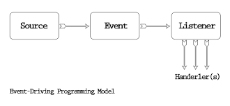
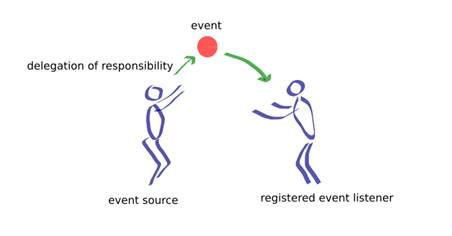
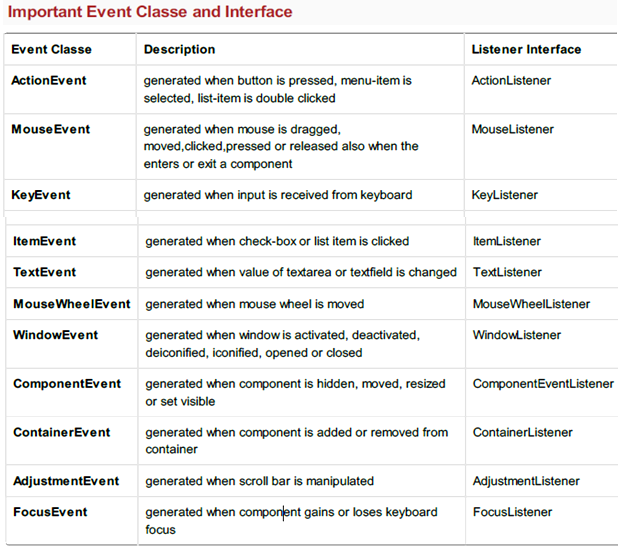
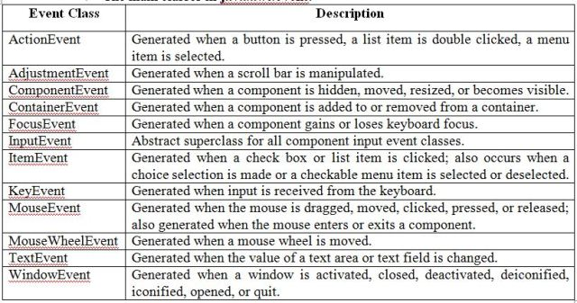
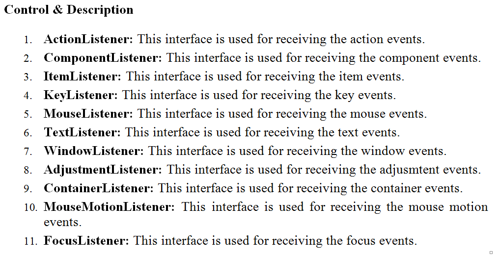
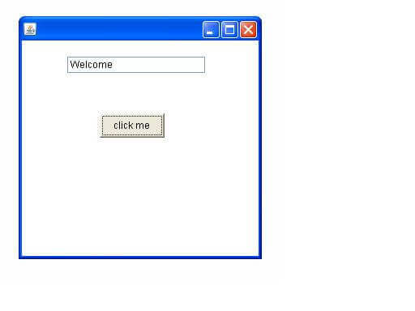
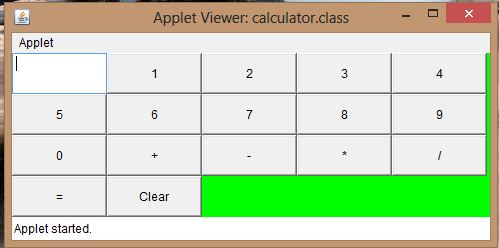
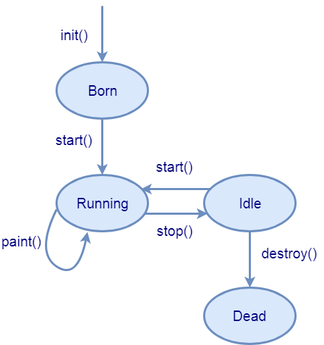
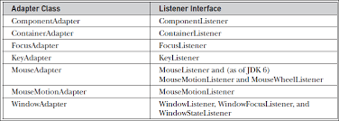

- An applet is a Java class that extends the java.applet.Applet class.
- A main() method is not invoked on an applet, and an applet class will not define main().
- Applets are designed to be embedded within an HTML page.
- When a user views an HTML page that contains an applet, the code for the applet is downloaded to the user's machine.
- A JVM is required to view an applet. The JVM can be either a plug-in of the Web browser or a separate runtime environment.
- The JVM on the user's machine creates an instance of the applet class and invokes various methods during the applet's lifetime.
- Applets have strict security rules that are enforced by the Web browser. The security of an applet is often referred to as sandbox security, comparing the applet to a child playing in a sandbox with various rules that must be followed.
- Other classes that the applet needs can be downloaded in a single Java Archive (JAR) file.
- Get applet parameters
- Get the network location of the HTML file that contains the applet
- Get the network location of the applet class directory
- Print a status message in the browser
- Fetch an image
- Fetch an audio clip
- Play an audio clip
- Resize the applet
To Display Smileyimport java.applet.Applet;
import java.awt.*;
public class SmileyExc extends Applet {
public void paint(Graphics g) {
g.setColor(Color.yellow);
g.fillOval(20,20,150,150); // For face
g.setColor(Color.black);
g.fillOval(50,60,15,25); // Left Eye
g.fillOval(120,60,15,25); // Right Eye
int x[] = {95,85,106,95};
int y[] = {85,104,104,85};
g.drawPolygon(x, y, 4); // Nose
g.drawArc(55,95,78,50,0,-180); // Smile
g.drawLine(50,126,60,116); // Smile arc1
g.drawLine(128,115,139,126); // Smile arc2
}
}

Event Handling
- Changing the state of an object is known as an event. For example, click on button, dragging mouse etc.
- The java.awt.event package provides many event classes and Listener interfaces for event handling.
- In order to react to an event, an applet must override the appropriate event-specific method.
- Initially, the applet will display "initializing the applet. Starting the applet." Then once you click inside the rectangle, "mouse clicked" will be displayed as well.
Displaying Images
- An applet can display images of the format GIF, JPEG, BMP, and others.
- To display an image within the applet, you use the drawImage() method found in the java.awt.Graphics class.

Delication event model
- In the Delegation event model, a class designated as an event source generates an event and sends it to one or more listeners.
- The responsibility of handling the event process is handed over to its listeners.This means that a particular event is processed only by a specific listener
- Events: The event object defines the change in state in the event source class. For example, interacting with the graphical interfaces, such as clicking a button or entering text via keyboard in a text box, item selection in a list, all represent some sort of change in the state. The event object is used to carry the required information about the state change.s
- Event sources: Event sources are objects that cause the events to occur due to some change in the property of the component. Because there can be various types a component can trigger, each must be registered to a listener to provide a suitable response.
- Event listeners: Event listeners are objects that are notified as soon as a specific event occurs.
- Event listeners must define the methods to process the notification they are interested to receive.


It is the root class from which all event state objects shall be derived. All Events are constructed with a reference to the object, the source, that is logically deemed to be the object upon which the Event in question initially occurred upon.This class is defined in java.util package.
Event classes are the classes that represent events at the core of java's event handling mechanism. Here, src is the objects that generates the event.
EventObjectcontains two objects: getSource() and toString(). toString()method returns the string equivalent of the event

Example program
import java.awt.*; import java.awt.event.*; import java.applet.*; import java.applet.*; import java.awt.event.*; import java.awt.*; public class Test extends Applet implements KeyListener { String msg=""; public void init() { addKeyListener(this); } public void keyPressed(KeyEvent k) { showStatus("KeyPressed"); } public void keyReleased(KeyEvent k) { showStatus("KeyRealesed"); } public void keyTyped(KeyEvent k) { msg = msg+k.getKeyChar(); repaint(); } public void paint(Graphics g) { g.drawString(msg, 20, 40); } }
Event listener
he Event listeners represent the interfaces which are responsible to handle a particular event. Java have provided us various Event listeners classes and Every method of an event listener has a single and only argument as an object which is the subclass of EventObject class. For example- the mouse event listener method will accept all instances of MouseEvent, where MouseEvent derived from the EventObject. The EventListner interface is a interface where every listener interface has to be extend. This class is defined in the java.util package. Class declaration The Following is the declaration for java.util.EventListener interface as public interface EventListener 
Example program
import java.awt.*; import java.awt.event.*; class AEvent extends Frame implements ActionListener{ TextField tf; AEvent(){ //create components tf=new TextField(); tf.setBounds(60,50,170,20); Button b=new Button("click me"); b.setBounds(100,120,80,30); //register listener b.addActionListener(this);//passing current instance //add components and set size, layout and visibility add(b);add(tf); setSize(300,300); setLayout(null); setVisible(true); } public void actionPerformed(ActionEvent e){ tf.setText("Welcome"); } public static void main(String args[]){ new AEvent(); } }Output

Adopted class
- java adapter classes provide the default implementation of listener interfaces.
- If you inherit the adapter class, you will not be forced to provide the implementation of all the methods of listener interfaces. So it saves code.
- The adapter classes are found in java.awt.event, java.awt.dnd and javax.swing.event packages.
The Adapter classes with their corresponding listener interfaces - java AWT (Abstract Window Toolkit) is an API to develop GUI or window-based applications in java.
- Java AWT components are platform-dependent i.e. components are displayed according to the view of operating system.
- AWT is heavyweight i.e. its components are using the resources of OS.
- The java.awt package provides classes for AWT api such as TextField, Label, TextArea, RadioButton, CheckBox, Choice, List etc.
Java AWT (Abstract Window Toolkit) is an API to develop GUI or window-based applications in java.
Java AWT components are platform-dependent i.e. components are displayed according to the view of operating system. AWT is heavyweight i.e. its components are using the resources of OS.
The java.awt package provides classes for AWT api such as TextField, Label, TextArea, RadioButton, CheckBox, Choice, List etc.
Java AWT Hierarchy
Container
The Container is a component in AWT that can contain another components like buttons, textfields, labels etc. The classes that extends Container class are known as container such as Frame, Dialog and Panel.
Window The window is the container that have no borders and menu bars. You must use frame, dialog or another window for creating a window.
Panel
The Panel is the container that doesn't contain title bar and menu bars. It can have other components like button, textfield etc.
Frame
The Frame is the container that contain title bar and can have menu bars. It can have other components like button, textfield etc.
Calculator program
import java.applet.*; import java.awt.*; import java.awt.event.ActionEvent; import java.awt.event.ActionListener; import java.awt.event.TextEvent; import java.awt.event.TextListener;; public class calculator extends Applet implements ActionListener, TextListener { String s,s1,s2,s3,s4; Button b1,b2,b3,b4,b5,b6,b7,b8,b9,b0; Button add,sub,eq,cl,mul,div; TextField t1; int a,b,c; public void init() { t1=new TextField(10); b1=new Button("1"); b2=new Button("2"); b3=new Button("3"); b4=new Button("4"); b5=new Button("5"); b6=new Button("6"); b7=new Button("7"); b8=new Button("8"); b9=new Button("9"); b0=new Button("0"); add=new Button("+"); sub=new Button("-"); mul=new Button("*"); div=new Button("/"); eq=new Button("="); cl=new Button("Clear"); GridLayout gb=new GridLayout(4,5); setLayout(gb); add(t1); add(b1); add(b2); add(b3); add(b4); add(b5); add(b6); add(b7); add(b8); add(b9); add(b0); add(add); add(sub); add(mul); add(div); add(eq); add(cl); b1.addActionListener(this); b2.addActionListener(this); b3.addActionListener(this); b4.addActionListener(this); b5.addActionListener(this); b6.addActionListener(this); b7.addActionListener(this); b8.addActionListener(this); b9.addActionListener(this); b0.addActionListener(this); add.addActionListener(this); sub.addActionListener(this); mul.addActionListener(this); div.addActionListener(this); eq.addActionListener(this); cl.addActionListener(this); paint(); //t1.addTextListener(this); } public void paint() { setBackground(Color.green); } public void actionPerformed(ActionEvent e) { s=e.getActionCommand(); if(s.equals("0")||s.equals("1")||s.equals("2")|| s.equals("3")||s.equals("4")||s.equals("5")||s.equals("6")||s.equals("7")||s.equals("8")|| s.equals("9")||s.equals("0")) { s1=t1.getText()+s; t1.setText(s1); } if(s.equals("+")) { s2=t1.getText(); t1.setText(""); s3="+"; } if(s.equals("-")) { s2=t1.getText(); t1.setText(""); s3="-"; } if(s.equals("*")) { s2=t1.getText(); t1.setText(""); s3="*"; } if(s.equals("*")) { s2=t1.getText(); t1.setText(""); s3="*"; } if(s.equals("=")) { s4=t1.getText(); a=Integer.parseInt(s2); b=Integer.parseInt(s4); if(s3.equals("+")) c=a+b; if(s3.equals("-")) c=a-b; t1.setText(String.valueOf(c)); } if(s.equals("Clear")) { t1.setText(""); } } public void textValueChanged(TextEvent e) { } }
Output

Applet
An applet is a Java program that runs in a Web browser. An applet can be a fully functional Java application because it has the entire Java API at its disposal.
There are some important differences between an applet and a standalone Java application, including the following −
Life Cycle of an Applet

Four methods in the Applet class gives you the framework on which you build any serious applet −
init − This method is intended for whatever initialization is needed for your applet. It is called after the param tags inside the applet tag have been processed.
start − This method is automatically called after the browser calls the init method. It is also called whenever the user returns to the page containing the applet after having gone off to other pages.
stop − This method is automatically called when the user moves off the page on which the applet sits. It can, therefore, be called repeatedly in the same applet.
destroy − This method is only called when the browser shuts down normally. Because applets are meant to live on an HTML page, you should not normally leave resources behind after a user leaves the page that contains the applet.
paint − Invoked immediately after the start() method, and also any time the applet needs to repaint itself in the browser. The paint() method is actually inherited from the java.awt.
A "Hello, World" Applet
Following is a simple applet named HelloWorldApplet.java −
import java.applet.*;
import java.awt.*;
public class HelloWorldApplet extends Applet
{
public void paint (Graphics g)
{
g.drawString ("Hello World", 25, 50);
}
}
java.applet.Applet
java.awt.Graphics
Without those import statements, the Java compiler would not recognize the classes Applet and Graphics, which the applet class refers to.
Every applet is an extension of the java.applet.Applet class. The base Applet class provides methods that a derived Applet class may call to obtain information and services from the browser context.
These include methods that do the following −
